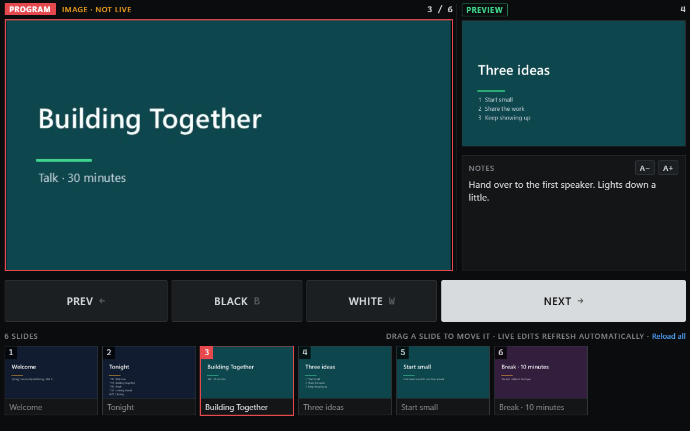
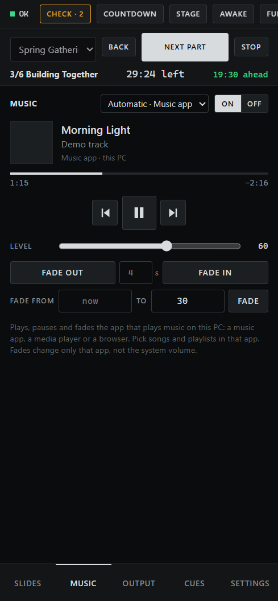
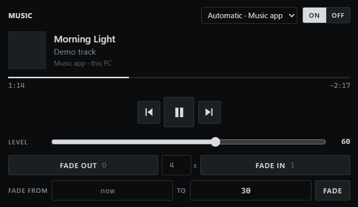
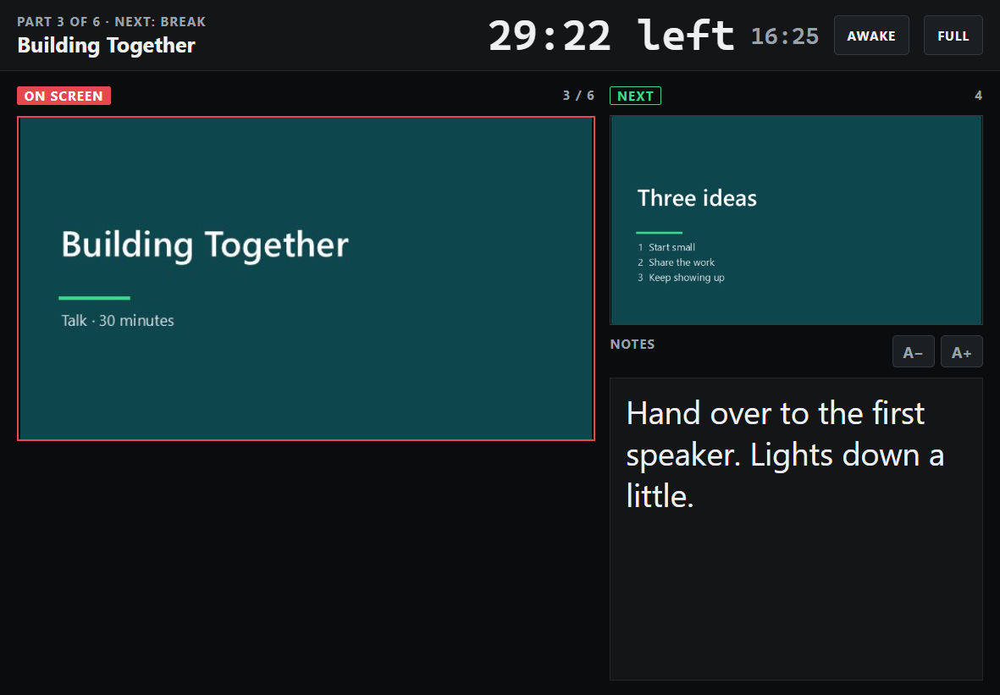

投影片Slides
投影上真正的画面、下一页、备注和计时。一下就黑屏、白屏或跳到任一页；拖一下就能调整顺序。What the projector really shows, the next slide, notes and timers. Black, white or any slide in one press; drag a slide to move it.
所有版本All editions
Stagio 把 PowerPoint、音乐播放程序和投影集中在一个控台上。坐在电脑前操作，或拿着手机当遥控器走动都可以。Stagio puts PowerPoint, your music player and the projector on one console. Run the event from the computer, or walk around with your phone as the remote.


功能What it does
每个版本只显示自己有的功能，用不到的不会出现，也不用设定。Each edition shows only what it has, so there is nothing to set up that you won't use.

投影上真正的画面、下一页、备注和计时。一下就黑屏、白屏或跳到任一页；拖一下就能调整顺序。What the projector really shows, the next slide, notes and timers. Black, white or any slide in one press; drag a slide to move it.

扫一下二维码，手机就是控台，翻页按钮一直在手边。不用装 App。Scan the code and your phone is the console, with the slide buttons always in reach. No app to install.

控制你本来就在用的播放程序：播放、暂停，平滑地淡出、淡入或淡到任一音量。Plays, pauses and fades the player you already use: smoothly out, in, or to any level.

没有音响系统？麦克风经过 EQ 直接送到喇叭，每个声音来源都有推子和音量表，有人讲话时音乐自动降低。No PA? The microphone goes to the speakers with EQ, each source has a fader and a meter, and the music dips while someone speaks.

投影上全屏倒数，音乐刚好在零秒结束。Extra 可以排好整场流程，按一下就进入下一段。A full-screen countdown on the projector, with the music ending at zero. Extra plans the whole event: one press goes to the next part.

讲员的手机或平板上有这一页、下一页、备注、剩余时间，还有你发过去的讯息。The speaker's phone or tablet shows this slide, the next, the notes, the time left and your messages.
还有：开场前检查、Cue（一个按钮执行一串动作）、耳机预听、修好翻页很慢的 Canva 文件。详见使用说明 →Also: a check before the event, cues (one press for a sequence of steps), headphone preview, and a fix for slow Canva files. All in the guide →
下载Download
大的版本包含小的版本的全部功能。三个版本的设置共用，随时可以换。Each bigger edition has everything of the smaller one. They share their settings, so you can switch any time.
你自己上台讲投影片：讲员、老师、做报告的人。You present your own slides: speakers, teachers, anyone giving a talk.
你在后面帮忙控投影片和音乐。You run the slides and the music from the back.
Lite 的全部，再加上Everything in Lite, and
你负责整场活动。You run the whole event.
Standard 的全部，再加上Everything in Standard, and
Windows 10 或 11，PowerPoint 2016 或 Microsoft 365。Mac 版在上方切换。Windows 10 or 11, with PowerPoint 2016 or Microsoft 365. For the Mac, switch above.
测试版 还没在真的 Mac 上配合 PowerPoint 测试过，正式使用前请先试一次。哪一个？苹果菜单 → 关于本机：写“芯片 Apple M…”选 Apple silicon，写“处理器 Intel”选 Intel。Test version Not yet tested with PowerPoint on a real Mac: try it before an event. Which one? Apple menu → About This Mac: “Chip Apple M…” is Apple silicon, “Processor Intel” is Intel.
| Lite | Standard | Extra | |
|---|---|---|---|
| 投影片：Program、Preview、备注、计时、黑屏/白屏、拖动调整顺序Slides: program, preview, notes, timers, black/white, drag to reorder | ✓ | ✓ | ✓ |
| 手机遥控、蓝牙遥控（Android）Phone remote, Bluetooth remote (Android) | ✓ | ✓ | ✓ |
| Stagio Wi-Fi（没有网络也能连手机）Stagio Wi-Fi (phones connect without a network) | ✓ | ✓ | ✓ |
| 开场前检查Check before the event | ✓ | ✓ | ✓ |
| 让翻页很慢的文件变快Speed up slow files | ✓ | ✓ | ✓ |
| 投影模式、系统音量和静音Projector mode, system volume and mute | ✓ | ✓ | ✓ |
| 复制/扩展屏幕、系统音量和静音Duplicate / extend, system volume and mute | ✓ | ✓ | ✓ |
| 放映在哪个屏幕、隐藏演示者视图Show slides on, hide the presenter view | ✓ | ✓ | ✓ |
| 音乐和淡入淡出Music and fades（“音乐”App、Spotify） (Music app, Spotify) | – | ✓ | ✓ |
| 切换音频设备Sound device | – | ✓ | ✓ |
| CueCues | – | ✓ | ✓ |
| 开场倒数Opening countdown | – | ✓ | ✓ |
| 混音Mixer | – | 基本Basic | 完整Full |
| 耳机预听Headphone preview | – | 基本Basic | 完整Full |
| 节目流程、每段剩余时间、整场快慢Run of show, time left, ahead / behind | – | – | ✓ |
| 讲台提示屏和讯息Stage display and messages | – | – | ✓ |
| 版本Version | 1.3.1 | 1.4.1 | 1.5.1 |
| 版本（测试版）Version (test) | 1.3.1 | 1.3.1 | 1.4.1 |
安装Install
xattr -cr "/Applications/Stagio Standard.app"（换成你装的版本）。It says “damaged”: run xattr -cr "/Applications/Stagio Standard.app" in Terminal, with your edition's name.手机和平板是遥控器，用浏览器打开，不用安装。Phones and tablets are the remote, in the browser. Nothing to install.
开源Open source
Stagio 免费，以 GPL-3.0 授权。它配合你已经有的东西：PowerPoint 和你的音乐播放程序。不用账号，也不上云端；手机通过你自己的网络连到电脑。Stagio is free, under the GPL-3.0. It works with what you already have: PowerPoint and your music player. No accounts and nothing in the cloud; phones talk to your computer over your own network.
安装程序在 GitHub 上从公开的源代码构建。目前还没有代码签名，所以 Windows 和 macOS 第一次会提醒；每个文件的 SHA-256 都在发布页上，可以核对。The installers are built on GitHub from the public source code. They are not code-signed yet, so Windows and macOS warn the first time; the SHA-256 of every file is on the release page to compare.